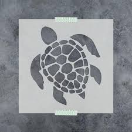

19.1 函数模板 Function templates¶
By Alex on April 18th, 2008 | last modified by Alex on January 23rd, 2020
翻译by dashjay 7月10日
为什么需要函数模板¶
在之前的章节中，我们已经学到了如何写函数和类，这些可以帮助成员们更容易和更安全的写代码，写出更加易于维护的代码。对于高效编程，函数和类都非常强大和方便的工具，在一些特殊的情况下，他们可能仍然有点受限制，因为 C++ 要求你指定所有参数的类型。
例如，假如你想写一个函数来计算两个数中的最大值，你可能会像这样做
int max(int x, int y)
{
return (x > y) ? x : y;
}
这个函数完美胜任工作——对于整型来说。如果之后你想实现一个 max() 函数，需要在 doubles 下工作？根据传统，答案可能是重载mac函数，并且创造一个新的 doubles 的版本：
double max(double x, double y)
{
return (x > y) ? x : y;
}
我们注意到 double 版本的 maximum() 和 int 版本完全相同！事实上，这个实现会在所有不同类型下工作：chars，ints，doubles，并且如果你已经重载了 > 运算符，这些类型也可以！然而，因为 C++ 要求你指定函数的变量，你就会困在给每一个你要用到的类型写一个同样的函数。
实现一系列不同“风味”的相同函数——仅仅只是参数类型不同，这件事可能会在维护上会非常令人头疼，也十分浪费时间，这也违反了通常编程的纲要，重复的代码应该被尽可能的减小。如果能够写一个函数就在任意类型下工作，那会不会很棒？
欢迎来到模板的世界。
什么是函数模板¶
如果你在词典里查“模板”这个读单词，你会发现它的定义会像这样：“模板是一种模型，作为创建类似对象的模式”。一种非常容易理解的模板类型就是漏字板（stencil）。一个漏字板是一个对象（例如：一张硬纸板）上面刻了一个形状（例如字母J）。把漏字板摆放在其他对象的上方，然后喷涂通过这个形状，你可以快速的产生不同颜色的镂空部分的形状！注意你仅仅需要创建一个给定的漏字板一次 —— 只要你喜欢，你可以使用它很多次来创建你喜欢的颜色的。更好的是，你不需要在制作漏字板的时候，提前想好形状的颜色，你可以再实际使用的时候再决定。

在 C++ 中，函数模板是作为创建其他类型模板的函数。在函数模板之前的一个更基础的想法就是来创建一个不指定确切类型的函数。相反，我们定义了使用占位符类型的函数，叫做末班类型餐朱。一旦我们创建了一个函数使用了额这些占位符，我们就能高效的创建一个”函数漏字板“。
当你调用一个模板函数的时候，编译器使用 ”漏字板“ 生成了一个模板的拷贝，然后使用实际类型替换了所有的占位符类型参数！使用这种方法，编译器可以从一个模板创建出很多不同”风味“函数！我们将会在下节课中详细探讨这个内容。
在 C++ 中创建函数模板¶
这时候，你可能在想如何在 C++ 中创建一个函数模板。其实，并不复杂。
让我们再看一眼 int 版本的 max() 的例子：
int max(int x, int y)
{
return (x > y) ? x : y;
}
我们注意到有三个位置需要指定具体的类型：参数 x, y 和返回值都必须指定为整型。想要创建一个函数模板，我们会使用占位符类型替换这些特定的类型。在这个例子中，因为我们仅仅需要替换 int 类型，我们只需要一个模板类型参数。
你可以将占位符类型命名为任何你想要的，只要他不是一个 C++ 预留的字段。然而，在 C++ 中，通常习惯使用字母 T （Type 的缩写）来命名模板类。
下面是带有占位符类型的新函数：
T max(T x, T y)
{
return (x > y) ? x : y;
}
这是一个不错的开始 —— 然而，它并不能通过编译，因为编译器并不知道 ”T“ 是什么！
想要使得这个起作用，我们需要告诉编译器两件事：第一，这是一个带模板的定义；第二，T 是一个占位符类型。我们可以在一行中做这两件事，仅仅是需要使用一个叫做模板参数声明的语法：
template <typename T> // this is the template parameter declaration
T max(T x, T y)
{
return (x > y) ? x : y;
}
不管你信不信，这就是我们需要做的，这将会通过编译！
现在让我们稍微仔细看一下模板参数的声明。我们开始于关键词 template —— 这会告诉编译器接下来是一系列的模板参数。我们放置所有的参数在一个尖括号（<>）中。想要创建一个模板类型参数，要同时使用类名或者 class 关键词。这两种关键词在在这个情况下没有什么不同，你想用啥取决于你。注意如果你想要使用 class 关键词，你传入的 type 实际上没必要是一个类（他可能是一个基础变量，指针，或者任何其他的匹配）。然后你命名你的类型（通常是 “T”）。
（原文，稍复杂）Now, let’s take a slightly closer look at the template parameter declaration. We start with the keyword template -- this tells the compiler that what follows is going to be a list of template parameters. We place all of our parameters inside angled brackets (<>). To create a template type parameter, use either the keyword typename or class. There is no difference between the two keywords in this context, so which you use is up to you. Note that if you use the class keyword, the type passed in does not actually have to be a class (it can be a fundamental variable, pointer, or anything else that matches). Then you name your type (usually “T”).
如果模板函数用了多个模板类型参数，可以使用逗号分隔开：
template <typename T1, typename T2>
// template function here
使用超过一个类型的那些类，常见的将他们命名为 T1 和 T2，或者其他单独的首字母大写的名字，例如 “S”。
一个最后需要注意的点：因为传入的函数参数可能是一个类型，并且通过value传值通常不是一个好主意，最好是能让模板的参数和返回值类型为常引用：
template <typename T>
const T& max(const T& x, const T& y)
{
return (x > y) ? x : y;
}
使用函数模板¶
使用函数模板是相当直接的 —— 你可以就像用其他函数那样使用它。这有一个整体使用的例子：
# include <iostream>
template <typename T>
const T& max(const T& x, const T& y)
{
return (x > y) ? x : y;
}
int main()
{
int i = max(3, 7); // returns 7
std::cout << i << '\n';
double d = max(6.34, 18.523); // returns 18.523
std::cout << d << '\n';
char ch = max('a', '6'); // returns 'a'
std::cout << ch << '\n';
return 0;
}
打印：
7
18.523
a
注意所有的这三个 max() 的调用有着不同的参数！因为我们已经分别用不同的参数调用了三次该函数。编译器将会使用模板来创建三个不同版本的函数，一个是带有 int 参数的（命名为 max<int>），一个是 double 参数的（命名为 max<double>），并且还有一个是 char 参数的（命名为 max<char>）。
注意，调用的时候，在函数名称中，你无需显式的指定特定的模板类型（例如 max<int>），因为编译器可以从参数类型来推断。
总结¶
如你所见，模板函数可以节省大量的时间，因为你只需要写一个函数，并且它能很好的工作在不通雷翔下。一旦你熟悉写函数模板了，您会发现它们实际上不需要比实际类型的函数编写更长的时间。模板函数减少了代码的维护难度，因为减少了大量相同的代码。最终，模板函数可能更加安全，因为当你需要该函数在另一个类型下工作的时候，不用拷贝函数然后手动改变参数类型。
模板函数也的确有些缺点，如果我们不提就太不称职了。第一，一些老的编译器不能很好的支持模板。然而这个缺点已经不再像过去一样是个大问题。第二，模板函数相比普通函数通常会造成疯狂的错误信息，非常难以解读。（我们将会在下节课中看到一个例子）。第三，模板函数可以减少你的编译时间和代码尺寸，因为一个单模板可能被“识别”并且在很多文件中被重新编译（有很多方式可以解决这个问题）。
然而，这些缺点比起高效而灵活的模板带来的优点都是不值一提。
注意：标准库早就携带了一个复杂的 max() 函数（在 algorithm 头中），因此你不需要自己写一个（除非你想写）。如果你写了你自己的，注意潜在的命名冲突如果你使用了语句 "using namespace std;", 因为编译器将不能告诉决定你想调用你的版本的 max 还是 std::max()。
在剩下的章节中，我们将会继续探索模板的话题。